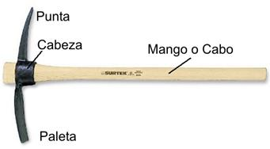

El Pico
Se denomina también Zapapico o Picota, y es una herramienta formada por una cabeza de hierro o acero, con un mango de madera, perpendicular a la parte metálica.La cabeza es de unos 60 cm de largo y 5 de grueso.
Normas para el uso del Pico
- Úsalo para cavar hoyos y zanjas en terrenos duros, también para remover piedras o materiales sueltos.
- El extremo que termina en la punta es apto para suelos duros y con presencia de piedras, mientras que el extremo ancho para suelos blandos, excavaciones y retirar material suelto.
- Al cavar usa el peso del Pico, lo la fuerza de tu espalda, ya que te cansarás muy rápido y tendrás como resultado un fuerte dolor muscular.
- No lo uses como palanca, ya que se afloja la cabeza y se vuelve peligroso, tampoco lo expongas al fuego, u otros agentes que afecten la madera.
- Al pasarlo a otro no lo arrojes, recuerda que es una herramienta con filo y punta, con las cuales de seguro causaría heridas muy graves.
- Al cavar verifica que no haya nadie a tu alrededor, y que no vayas a tropezar con ningún obstáculo.
- Al moverte, colócalo sobre tu hombro, con la punta mirando hacia arriba, NO lo lleves balanceándose ya que puedes golpear a alguien con él.